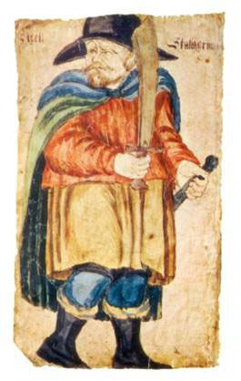
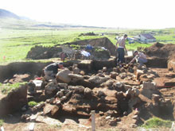
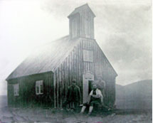

Historical Souces and Archaeology
“When Christianity was adopted by law in Iceland (ca. 1000 A.D.), Grím of Mosfell was baptized and built a church there. People say that Thordis had Egil's bones moved to the church, and this is the evidence. When a church was built at Mosfell, the one that Grím had built at Hrísbrú was demolished and a new graveyard was laid out. Under the altar some human bones were found, much bigger than ordinary human bones, and people are confident that these were Egil's because of stories told by old men.” - Egil's Saga, chapter 86
Historical sources provide a rich source of information about the history of the Mosfell valley. The wealth of medieval and later documentation combined with the archaeological data currently being recovered allows us to construct a rich picture of the Viking Age community in the Mosfell Valley.
One goal of our research is to obtain archaeological data that can be used to evaluate the historical accuracy of literary sources such as Egil's Saga. For example, scholars have been in some disagreement as to precisely what the saga passage from Ch. 86 tells us about the placement of the early church at Mosfell and the relationship to the neighboring church and farm at Hrísbrú.
One of these farms, or perhaps both at different times, appears to have been the homes of chieftains.

A depiction of Egill Skallagrímsson from a saga manuscript.
Excavation of the Hrísbrú Church.
The nineteenth-century Mosfell Church.